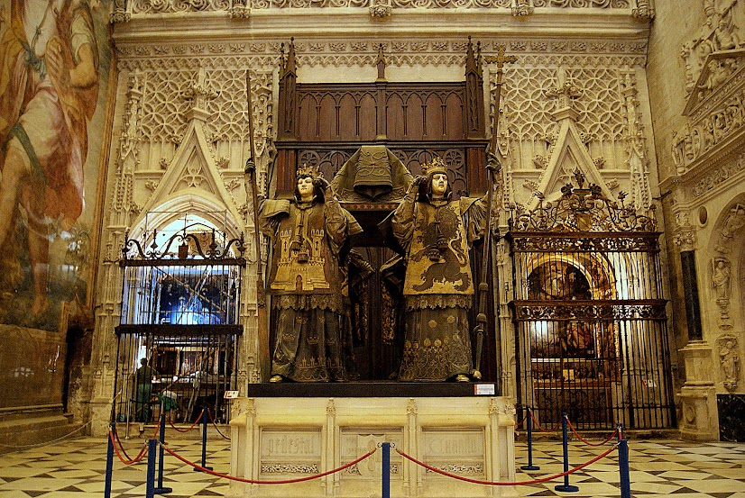
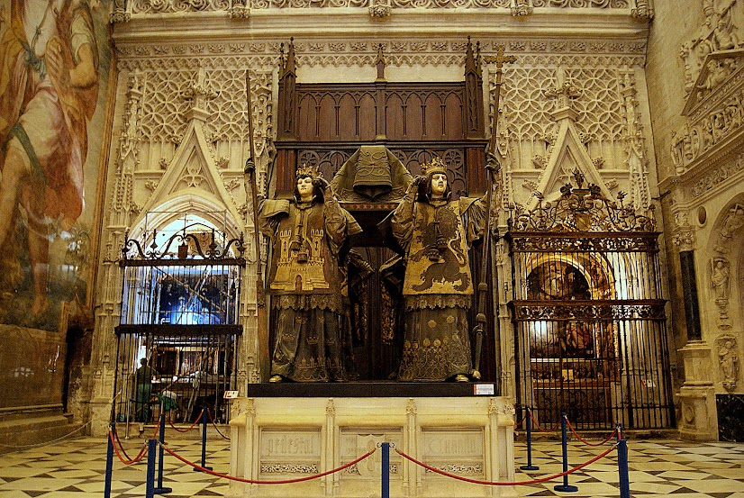

Monumentos de Sevilla
- La Catedral de Sevilla y La giralda
- El Real Alcázar
- La Plaza de España
- La Maestranza
- La Torre del Oro
- Puente de Triana
- La seta
- Torre Sevilla
- El Archivo de Indias
- Hospital de los Venerables
- Hospital de la Caridad
- Museo Arqueologico
- Museo de Artes y Costumbres
- Monasterio de la Cartuja
- Centro Andaluz y de Arte
- Antiquarium
- Ayuntamiento
- Palacio de Dueñas
- Casa Salinas
- Palacio de los Marqueses de la Algaba
- Museo de Bellas Artes
- Casa Fabiola Museo Bellver
- Museo Baile Flamenco
- Museo Militar
- Pabellon de la Navegación
- Acuario
- Casa de la Ciencia
- Espacio Nao Victoria
- Espacio Santa Clara
- Centro ceramica Santa Ana

 


La Catedral
La Catedral de Sevilla te dejará perplejo por sus proporciones. Cuentan las crónicas que fue concebido por el Cabildo Catedralicio bajo las palabras «Hagamos un templo tan grandioso que los que lo vieren labrado nos tengan por locos». Todo en la Catedral es colosal. Podrás admirar el retablo mayor, considerado por muchos una de las obras más destacadas de la historia del arte, o ver de cerca el mausoleo donde descansan los restos de Cristóbal Colón.
La Giralda
La Giralda de Sevilla es una torre de unas dimensiones sin comparación para una construcción de su época (desde el siglo XII hasta el XVI). De hecho, fue durante mucho tiempo la edificación más alta del mundo (101 metros contando el Giraldillo, la preciosa veleta que la corona y uno de los símbolos de la ciudad). La Giralda es una perfecta simbiosis de diferentes estilos arquitectónicos, de diferentes civilizaciones, una torre que comienza siendo alminar y termina siendo campanario. Cuando subas a su mirador podrás contemplar toda la ciudad, y a sus pies el Patio de los Naranjos y la mayor Catedral gótica que existe.
DIRECCION Y DATOS DE CONTACTO
Direccion: Avenida de la Constitucion, s/n.
41004 Sevilla (Andalucía)
E-mail: info@catedraldesevilla.es
Tlf: +34 902 099 692